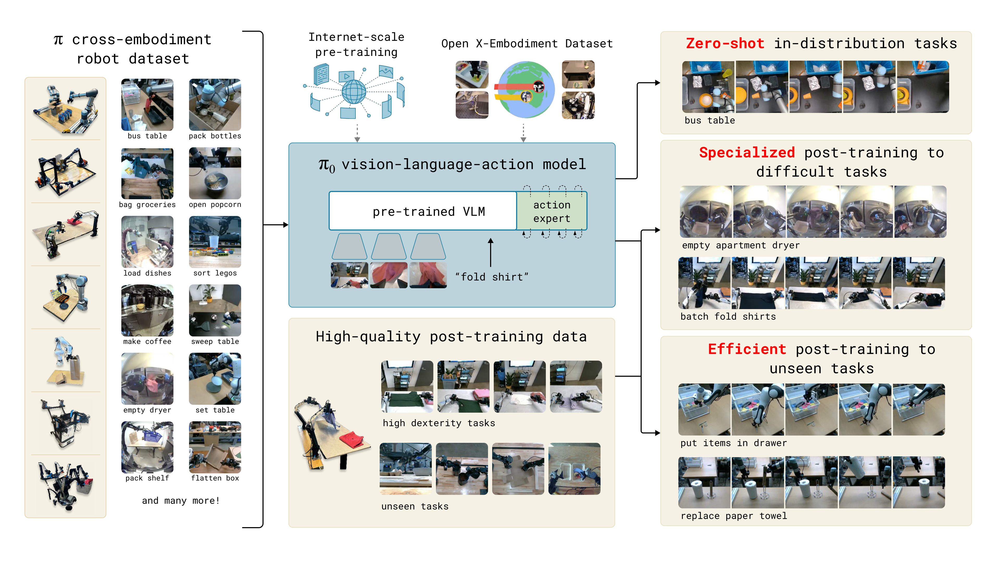
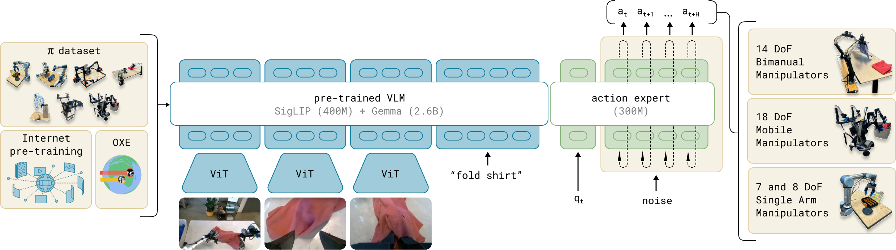
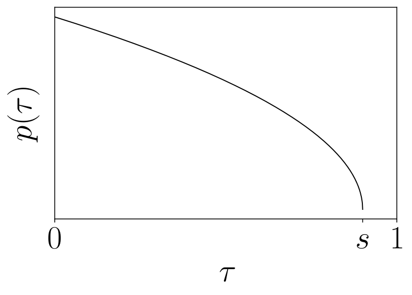
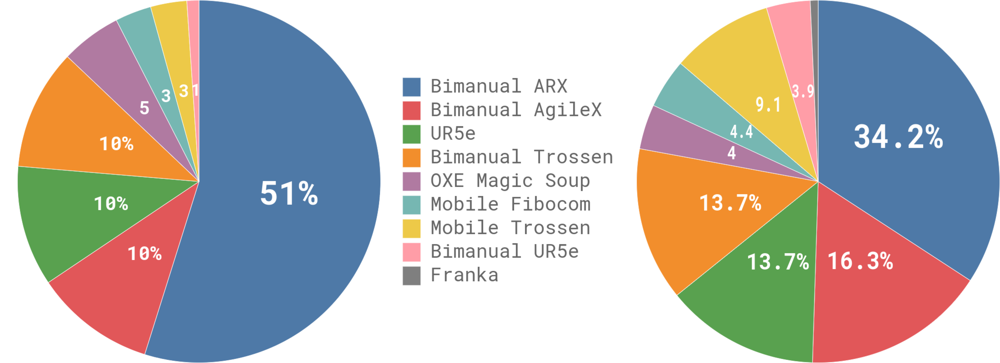
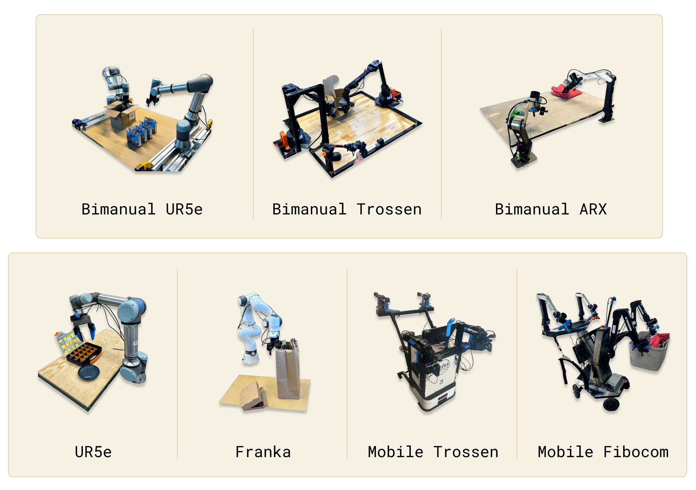
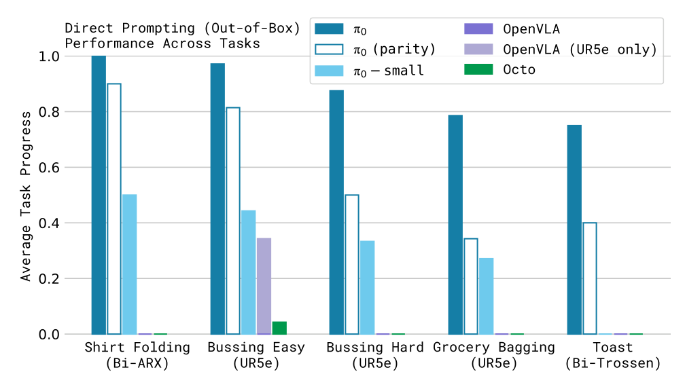
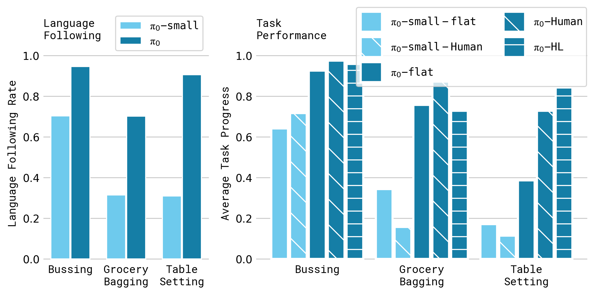
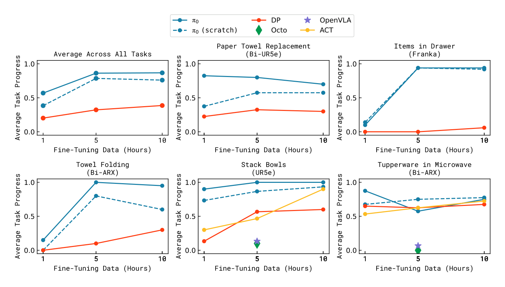
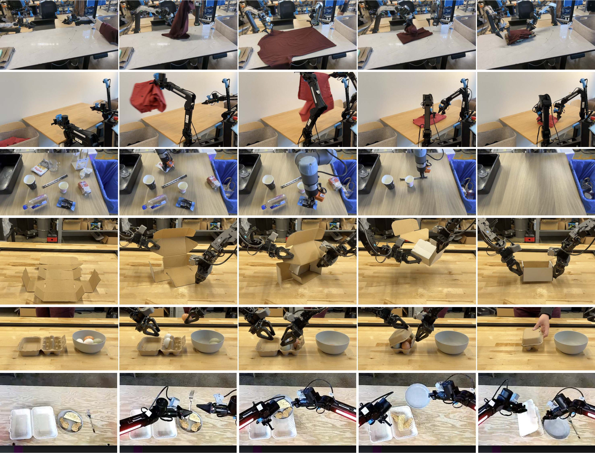

P4. pi0: A Vision-Language-Action Flow Model for General Robot Control¶
0. 읽기 전 약어 및 핵심 용어¶
이 문서를 읽기 전에 아래 약어와 용어를 먼저 정리한다. 이후 본문에서는 괄호 안의 약어를 사용한다.
- Artificial Intelligence (AI): 사람의 지각, 추론, 학습, 의사결정 능력을 기계가 수행하도록 만드는 인공지능 분야를 뜻한다.
- Large Language Model (LLM): 대규모 텍스트 데이터로 학습되어 언어 이해, 생성, 추론, 계획에 쓰이는 foundation model이다.
- Vision-Language Model (VLM): 이미지와 텍스트를 함께 입력받아 시각-언어 이해나 생성 작업을 수행하는 모델이다.
- Vision-Language-Action (VLA): 시각 관측과 언어 명령을 함께 받아 로봇 action까지 생성하는 모델 또는 학습 패러다임이다.
- Red-Green-Blue image (RGB): 색상을 red, green, blue 세 채널로 표현하는 일반 image format이다.
- Robotics Transformer (RT): robot observation을 입력받아 action을 예측하는 transformer 기반 robot policy 계열을 뜻한다.
- Robotics Transformer 2 (RT-2): web-scale vision-language knowledge와 robot trajectory를 함께 학습해 action token을 생성하는 VLA 모델이다.
- Robotics Transformer-X model family (RT-X): Open X-Embodiment 데이터 위에서 여러 robot embodiment로 확장한 RT 계열 policy family를 뜻한다.
- Open X-Embodiment (OXE): 여러 기관, 로봇, task의 demonstration을 묶은 대규모 cross-embodiment robot dataset이다.
- Distributed Robot Interaction Dataset (DROID): 여러 장소에서 수집한 in-the-wild robot manipulation demonstration dataset이다.
- A Low-cost Open-source Hardware System for Bimanual Teleoperation (ALOHA): 저비용 양팔 teleoperation hardware와 imitation learning setup을 뜻한다.
- Action Chunking with Transformers (ACT): 여러 timestep의 action chunk를 한 번에 예측해 fine-grained robot manipulation을 학습하는 transformer policy이다.
- Physical Intelligence pi-zero model (pi0): Physical Intelligence가 제안한 general robot control용 vision-language-action flow model이다.
- Physical Artificial Intelligence (Physical AI): 디지털 공간의 예측을 넘어 물리 세계에서 지각, 예측, 계획, 행동, 안전 검사를 수행하는 AI 시스템을 뜻한다.
1. Metadata¶
| Field | 내용 |
|---|---|
| ID | P4 |
| Title | pi0: A Vision-Language-Action Flow Model for General Robot Control |
| Authors | Kevin Black, Noah Brown, Danny Driess, Adnan Esmail et al. |
| Affiliation / Team | Physical Intelligence |
| Venue / Status | RSS 2025 |
| Date | 2024-10-31 |
| Link | https://arxiv.org/abs/2410.24164 |
| Local source | paper_corpus/sources/P4 |
| Source figures | paper_corpus/figures_source/P4/manifest.md |
2. 핵심 요약¶
pi0는 pretrained VLM backbone에 continuous action generation을 위한 flow matching action expert를 붙인 robot foundation model이다. 핵심 목표는 language/vision semantic knowledge를 VLM에서 가져오면서도, 실제 로봇 제어에 필요한 high-frequency continuous action chunk를 안정적으로 생성하는 것이다.
이 논문은 VLA를 단순히 "language model이 action token을 autoregressive하게 출력하는 모델"로 보지 않고, VLM semantic backbone과 diffusion/flow 계열 action generator를 결합한 형태로 재정의한다. 따라서 RT-2/OpenVLA 계열의 discrete action-token 접근과 Diffusion Policy 계열의 continuous action distribution modeling을 연결하는 중요한 논문이다.
3. 왜 중요한가?¶
- PaliGemma 기반 VLM에 300M parameter action expert를 추가하여 총 3.3B parameter VLA를 구성했다.
- action을 discrete token이 아니라 flow matching으로 생성해 dexterous, high-frequency, multimodal control에 대응했다.
- single-arm, dual-arm, mobile manipulator를 포함한 7개 robot configuration과 68개 task의 cross-embodiment 데이터를 사용했다.
- pre-training과 post-training을 분리해, LLM 학습 recipe와 유사한 robot foundation model 학습 흐름을 제안했다.
- OpenVLA, Octo, ACT, Diffusion Policy와 비교하면서 VLM pretraining, action chunking, flow matching의 결합이 왜 필요한지 실험적으로 보여준다.
4. 전체 아이디어¶
논문의 핵심 그림은 "semantic VLM backbone + robotics action expert + flow matching action chunk"라는 구조를 한 장으로 요약한다.

Figure 1. pi0는 pretrained VLM backbone과 cross-embodiment dexterous manipulation dataset을 사용하고, 별도의 action expert가 flow matching으로 continuous action을 생성한다. 모델은 prompt만으로 바로 사용할 수도 있고, 복잡한 multi-stage task에 fine-tuning할 수도 있다. Source figure: figures/teaser_fig.pdf.
발표에서는 이 그림을 기준으로 다음 대비를 잡으면 좋다.
| 관점 | 기존 autoregressive VLA | pi0 |
|---|---|---|
| action 표현 | discrete action token | continuous action chunk |
| 생성 방식 | next-token prediction | conditional flow matching |
| 강점 | VLM/LLM recipe와 자연스럽게 결합 | dexterous/high-frequency control에 유리 |
| 약점 | action chunk, continuous precision이 어려움 | flow inference cost와 data recipe가 중요 |
5. Framework Overview¶
pi0의 학습은 크게 pre-training과 post-training으로 나뉜다. pre-training은 다양한 robot embodiment와 task를 통해 general capability를 만들고, post-training은 특정 downstream task에 대해 fluent하고 consistent한 전략을 학습한다.

Figure 2. pi0 framework overview. OXE와 Physical Intelligence 자체 dexterous manipulation dataset을 섞어 flow matching VLA를 학습한다. VLM backbone은 PaliGemma에서 초기화하고, robot state/action 처리는 별도 action expert가 맡는다. Source figure: figures/overview.pdf.
여기서 중요한 설계 선택은 두 가지다.
- VLM backbone은 image/text semantic representation을 담당한다.
- action expert는 proprioception과 noisy action chunk를 처리하며, flow matching vector field를 예측한다.
6. Observation과 Action Chunk Formulation¶
pi0가 모델링하려는 분포는 observation이 주어졌을 때 future action chunk가 나올 조건부분포다.
| Notation | 의미 |
|---|---|
| \(p(\mathbf{A}_t \mid \mathbf{o}_t)\) | 현재 observation이 주어졌을 때 future action chunk의 조건부분포 |
| \(\mathbf{A}_t\) | timestep \(t\)에서 예측하는 future action sequence |
| \(\mathbf{a}_{t}\) | timestep \(t\)의 robot action vector |
| \(H\) | action horizon; 논문 실험에서는 \(H=50\) |
| \(\mathbf{o}_t\) | robot observation |
| \(\mathbf{I}^{i}_{t}\) | \(i\)번째 RGB camera image; robot에 따라 2개 또는 3개 image 사용 |
| \(n\) | camera image 개수 |
| \(\ell_t\) | language command token sequence |
| \(\mathbf{q}_t\) | proprioceptive state; joint angle 등 robot state vector |
이 formulation의 포인트는 action을 single-step prediction이 아니라 horizon 길이의 chunk로 생성한다는 점이다. 이는 Diffusion Policy의 receding horizon idea와 연결되지만, pi0는 이를 VLM 기반 cross-embodiment foundation model에 통합한다.
7. Flow Matching Training Objective¶
pi0는 action token을 conditional flow matching loss로 학습한다.
| Notation | 의미 |
|---|---|
| \(L^\tau(\theta)\) | flow timestep \(\tau\)에서의 conditional flow matching loss |
| \(\theta\) | pi0 model parameter |
| \(\mathbf{A}_t\) | clean expert action chunk |
| \(\mathbf{o}_t\) | observation condition |
| \(\mathbf{A}_t^\tau\) | flow timestep \(\tau\)에서의 noisy action chunk |
| \(q(\mathbf{A}_t^\tau \mid \mathbf{A}_t)\) | clean action에서 noisy action으로 가는 probability path |
| \(\mathbf{v}_{\theta}(\mathbf{A}_t^\tau, \mathbf{o}_t)\) | model이 예측하는 vector field |
| \(\mathbf{u}(\mathbf{A}_t^\tau \mid \mathbf{A}_t)\) | target denoising vector field |
| \(\tau\) | flow matching timestep; \([0,1]\) 범위 |
이 loss는 "noisy action chunk가 주어졌을 때 clean action 쪽으로 어떤 방향으로 이동해야 하는가"를 학습한다. 즉, action을 classification token으로 맞히는 것이 아니라 continuous action space의 vector field를 학습한다.
8. Probability Path와 Noisy Action¶
논문은 linear-Gaussian probability path를 사용한다.
| Notation | 의미 |
|---|---|
| \(q(\mathbf{A}_t^\tau \mid \mathbf{A}_t)\) | clean action chunk에서 noisy action chunk를 sampling하는 분포 |
| \(\mathcal{N}\) | Gaussian distribution |
| \(\mathbf{I}\) | identity covariance matrix |
| \(\boldsymbol{\epsilon}\) | standard Gaussian noise |
| \(\mathbf{A}_t^\tau\) | clean action과 noise를 \(\tau\)로 interpolation한 noisy action |
| \(\mathbf{u}(\mathbf{A}_t^\tau \mid \mathbf{A}_t)\) | noisy action에서 clean action으로 가기 위한 target vector field |
이 식은 flow matching을 diffusion-style denoising으로 이해하게 해준다. \(\tau=0\) 근처에서는 거의 noise이고, \(\tau=1\) 근처에서는 clean action에 가까워진다.
9. Inference: Euler Integration¶
inference에서는 random noise에서 시작해 learned vector field를 따라 \(\tau=0\)에서 \(\tau=1\)까지 적분한다.
| Notation | 의미 |
|---|---|
| \(\mathbf{A}_{t}^{\tau}\) | 현재 flow timestep의 action chunk sample |
| \(\mathbf{A}_{t}^{\tau+\delta}\) | Euler step 이후 action chunk sample |
| \(\delta\) | integration step size |
| \(\mathbf{v}_{\theta}\) | 학습된 vector field |
| \(\mathbf{o}_t\) | 현재 robot observation |
논문에서는 10번의 integration step을 사용하며, 이에 해당하는 step size는 \(\delta=0.1\)이다. observation prefix의 key/value를 cache하고 action token 부분만 반복 계산함으로써 inference 효율을 확보한다.
10. Flow Timestep Sampling¶
pi0는 uniform timestep sampling 대신 lower timestep, 즉 더 noisy한 action에 더 많은 weight를 주는 shifted beta distribution을 사용한다.
| Notation | 의미 |
|---|---|
| \(p(\tau)\) | flow timestep sampling distribution |
| \(\tau\) | flow matching timestep |
| \(s\) | upper cutoff value; 논문에서는 \(s=0.999\) |
| \(\mathrm{Beta}(\cdot;1.5,1)\) | low timestep 쪽에 더 많은 sample을 배정하는 beta distribution |
저자들은 robot observation이 action distribution을 강하게 constrain하기 때문에, noisy action에서 mean action 방향을 잡는 문제가 이미지 생성보다 더 중요하다고 본다. 그래서 high-noise region을 더 많이 학습하도록 timestep sampling을 설계했다.

Figure 3. Flow matching timestep sampling distribution. 낮은 timestep, 즉 더 noisy한 action에 sample을 집중하고 cutoff $s$ 이후 timestep은 sampling하지 않는다. Source figure: figures/timestep_sampling.pdf.
11. Dataset Recipe¶
pre-training mixture는 OXE subset인 OXE Magic Soup와 Physical Intelligence의 자체 \(\pi\) dataset으로 구성된다.

Figure 4. Dataset overview. 왼쪽은 dataset별 timestep 규모, 오른쪽은 pre-training mixture에서의 weight를 보여준다. Source figure: figures/combined-robot-allocation-chart.png.
논문에서 확인되는 핵심 수치는 다음과 같다.
| 항목 | 내용 |
|---|---|
| open-source data 비중 | pre-training mixture의 9.1% |
| open-source source | OXE, Bridge v2, DROID 등 |
| 자체 dataset 규모 | 903M timesteps |
| single-arm data | 106M timesteps |
| dual-arm data | 797M timesteps |
| robot/task 범위 | 7 robot configurations, 68 tasks |
dataset imbalance를 줄이기 위해 task-robot combination의 sample 수 \(n\)에 대해 다음 weighting을 사용한다.
| Notation | 의미 |
|---|---|
| \(w(n)\) | 해당 task-robot combination에 부여되는 sampling weight |
| \(n\) | 해당 combination의 sample 수 |
| \(0.43\) | overrepresented combination의 영향력을 줄이기 위한 exponent |
\(n\)에 비례해 그대로 sampling하면 laundry folding처럼 많이 수집된 어려운 task가 과도하게 지배할 수 있다. \(n^{0.43}\)은 데이터가 많은 combination을 완전히 무시하지 않으면서도 상대적 비중을 낮춘다.
12. Cross-Embodiment Robot Setups¶
pi0는 서로 다른 action/state dimensionality를 가진 robot을 하나의 모델에서 처리한다. 가장 큰 robot의 state/action dimension인 18에 맞춰 vector를 구성하고, 더 낮은 차원의 robot은 zero-padding한다.

Figure 5. Robots used in experiments. single-arm, dual-arm, holonomic/nonholonomic mobile manipulator가 모두 포함되며, pi0는 이 platform들을 joint training한다. Source figure: figures/robots_compressed.pdf.
cross-embodiment 관점에서 중요한 점은 action space를 통일하는 방식이다.
- robot마다 camera 개수가 다르면 missing image slot을 mask한다.
- action/state vector 차원이 다르면 최대 차원에 맞춰 zero-padding한다.
- 동일 모델이 UR5e, Franka, bimanual ALOHA-style robot, mobile manipulator를 모두 처리한다.
13. Out-of-Box Evaluation¶
base model은 post-training 없이 language command만으로 5개 task에서 평가된다.

Figure 6. Out-of-box evaluation results. pi0 full 700k, compute-parity 160k, pi0-small, OpenVLA, Octo, UR5e-only OpenVLA를 비교한다. pi0 full이 전반적으로 가장 높고, compute-parity version도 baseline을 상회한다. Source figure: figures/pretrain_tasks.pdf.
결과 해석에서 핵심은 다음이다.
| 비교 대상 | 논문 해석 |
|---|---|
| OpenVLA | autoregressive discretization이라 action chunk와 high-frequency control에 불리 |
| Octo | action chunk/diffusion은 가능하지만 model capacity가 작음 |
| pi0-small | VLM pretraining이 없는 smaller model; OpenVLA/Octo보다 강한 경우가 있지만 full pi0보다 낮음 |
| pi0 compute parity | baseline과 유사한 update 수에서도 baseline보다 좋음 |
| pi0 full | full training에서 가장 높은 성능 |
이 실험은 "VLM pretraining만 있으면 충분한가?"가 아니라 "VLM pretraining과 continuous action generator가 함께 필요하다"는 메시지를 만든다.
14. Language Following과 High-Level Policy¶
pi0는 flat command만 받는 방식뿐 아니라, human expert 또는 high-level VLM policy가 intermediate language command를 제공하는 방식으로도 평가된다.

Figure 7. Language evaluation. flat command, human intermediate command, high-level VLM policy command를 비교한다. intermediate command는 pi0의 language following과 long-horizon execution을 개선하지만, pi0-small은 language following 능력이 제한적이라 같은 이득을 얻지 못한다. Source figure: figures/language_tasks.png.
이 부분은 SayCan과 직접 연결된다. SayCan은 LLM이 high-level skill을 선택하고 low-level affordance가 실행 가능성을 평가한다면, pi0는 low-level policy 자체가 language-conditioned VLA이고 high-level VLM이 subtask command를 제공할 수 있다.
15. Fine-Tuning Evaluation¶
post-training에서는 pre-trained pi0를 downstream task에 fine-tuning한다. 논문은 stack bowls, towel folding, microwave, drawer, paper towel replacement 등 pre-training과 유사도와 난이도가 다른 task를 사용한다.

Figure 8. Fine-tuning with varying amounts of data. pre-trained pi0는 scratch training보다 데이터 효율적으로 downstream task를 학습하며, 쉬운 task에서는 적은 데이터로도 성능이 올라간다. Source figure: figures/finetune_tasks_over_time.pdf.
fine-tuning 실험에서 읽어야 할 포인트는 task similarity다. pre-training과 가까운 task에서는 transfer가 잘 보이고, 완전히 새로운 dynamics나 object가 포함될수록 post-training data의 품질과 양이 중요해진다.
16. Complex Multi-Stage Tasks¶
논문은 5분에서 20분에 이르는 complex task도 다룬다. laundry folding, mobile laundry, real lunch table bussing, box assembly, egg packing, food packing 등이 포함된다.

Figure 9. Complex temporally extended tasks. laundry, table bussing, box assembly, egg packing, food packing 등은 grasping, stacking, folding, flattening, semantic sorting, deformable object handling을 조합해야 한다. Source figure: figures/multi_stage_filmstrip_compressed.pdf.
이 결과는 Physical AI 관점에서 특히 중요하다. 여기서의 난점은 단순 recognition이나 single-step manipulation이 아니라, 물체 상태가 행동에 의해 계속 바뀌는 long-horizon physical interaction이다. 논문은 일부 task에서 high-level policy를 사용해 semantic decomposition을 보조한다.
17. World Model 관점에서의 해석¶
pi0는 명시적인 world model을 학습하지 않는다. 즉, future observation이나 latent dynamics를 rollout하는 모델은 아니다. 그러나 다음 이유로 world model 연구와 강하게 연결된다.
| World Model 질문 | pi0에서의 대응 |
|---|---|
| 환경 상태를 어떻게 이해하는가? | VLM backbone이 image/language semantic representation을 제공 |
| physical dynamics를 어떻게 반영하는가? | action expert가 demonstration distribution의 action vector field를 학습 |
| long-horizon planning은 어떻게 하는가? | high-level VLM policy 또는 task-specific post-training으로 보조 |
| embodiment 차이는 어떻게 처리하는가? | zero-padding, missing image masking, cross-embodiment training |
따라서 pi0는 "latent dynamics를 예측하는 world model"이라기보다, web-scale semantic prior와 robot action prior를 결합한 implicit physical policy model에 가깝다.
18. 기존 논문들과의 연결¶
| 연결 논문 | 연결 포인트 |
|---|---|
RT-2 (G6) |
VLM/VLA를 통해 web knowledge를 robot action으로 transfer한다는 흐름을 계승 |
Open X-Embodiment (D1) |
cross-embodiment dataset과 RT-X recipe의 확장판 |
OpenVLA (D5) |
open-source VLA baseline; pi0는 discrete action token 대신 flow matching 사용 |
Diffusion Policy (P1) |
continuous action distribution과 action chunk generation을 robot control에 적용한 선행 흐름 |
| ACT / ALOHA | action chunking과 dexterous manipulation setting의 기반 |
SayCan (G2) |
high-level language decomposition을 low-level policy와 결합하는 관점 |
19. 한계와 주의점¶
- pre-training dataset composition이 성능에 미치는 영향은 아직 완전히 이해되지 않았다.
- 모든 task에서 near-perfect reliability를 보장하지 못하며, 필요한 data 양을 예측하기 어렵다.
- 매우 다양한 domain 간 positive transfer가 언제 발생하는지 명확하지 않다.
- autonomous driving, navigation, legged locomotion 등 다른 Physical AI domain으로 확장하려면 embodiment와 dynamics 차이를 다시 검토해야 한다.
- source 공개와 재현성 측면에서는 dataset/model 규모가 매우 커서 일반 연구실이 그대로 재현하기 어렵다.
20. 발표 구성 제안¶
- RT-2/OpenVLA의 discrete VLA 흐름과 Diffusion Policy의 continuous action 흐름을 먼저 대비한다.
- pi0가 두 흐름을 VLM backbone + flow matching action expert로 결합한다고 소개한다.
- Figure 2로 architecture와 pre-training/post-training recipe를 설명한다.
- action chunk formulation과 flow matching loss를 수식으로 설명한다.
- dataset mixture와 cross-embodiment robot setup을 통해 scaling recipe를 설명한다.
- out-of-box, language, fine-tuning, complex multi-stage task 순서로 결과를 해석한다.
- 마지막에 "pi0는 world model인가?"라는 질문을 던지고 implicit physical policy model로 정리한다.
21. 토론 질문¶
- VLA에서 action을 discrete token으로 표현하는 방식과 flow/diffusion으로 표현하는 방식은 어떤 task에서 갈라질까?
- pi0의 성능 향상은 VLM pretraining, dataset scale, flow matching, action chunking 중 무엇이 가장 큰 요인일까?
- cross-embodiment zero-padding은 장기적으로 충분한가, 아니면 morphology-aware representation이 필요할까?
- world model 없이 policy만 scaling하는 접근은 long-horizon physical reasoning에 어디까지 대응할 수 있을까?
- 운영/현장 적용 관점에서는 dataset mixture weighting, task allocation, robot fleet learning을 어떤 연구 문제로 만들 수 있을까?
22. 한 문장 정리¶
pi0는 pretrained VLM의 semantic knowledge와 flow matching 기반 continuous action chunk generation을 결합해, dexterous manipulation과 cross-embodiment robot foundation model 연구를 하나의 실험적 framework로 제시한 논문이다.